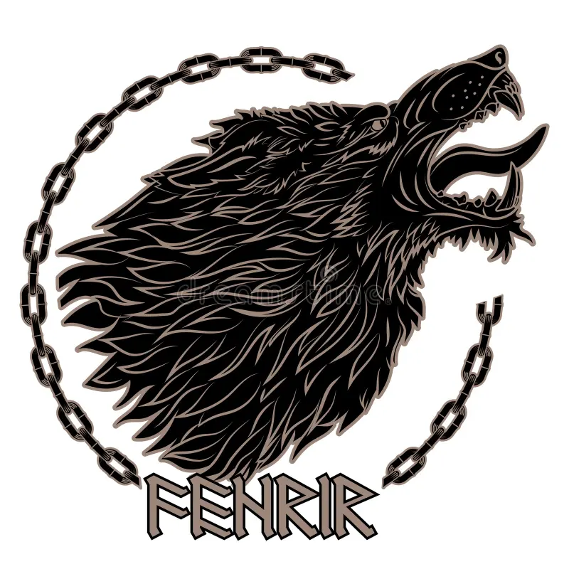
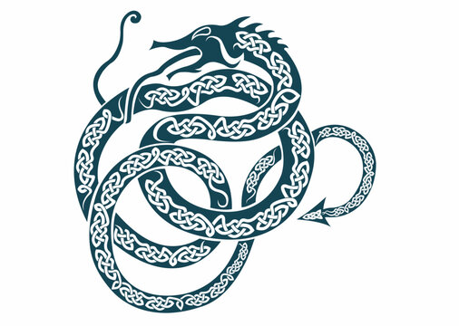
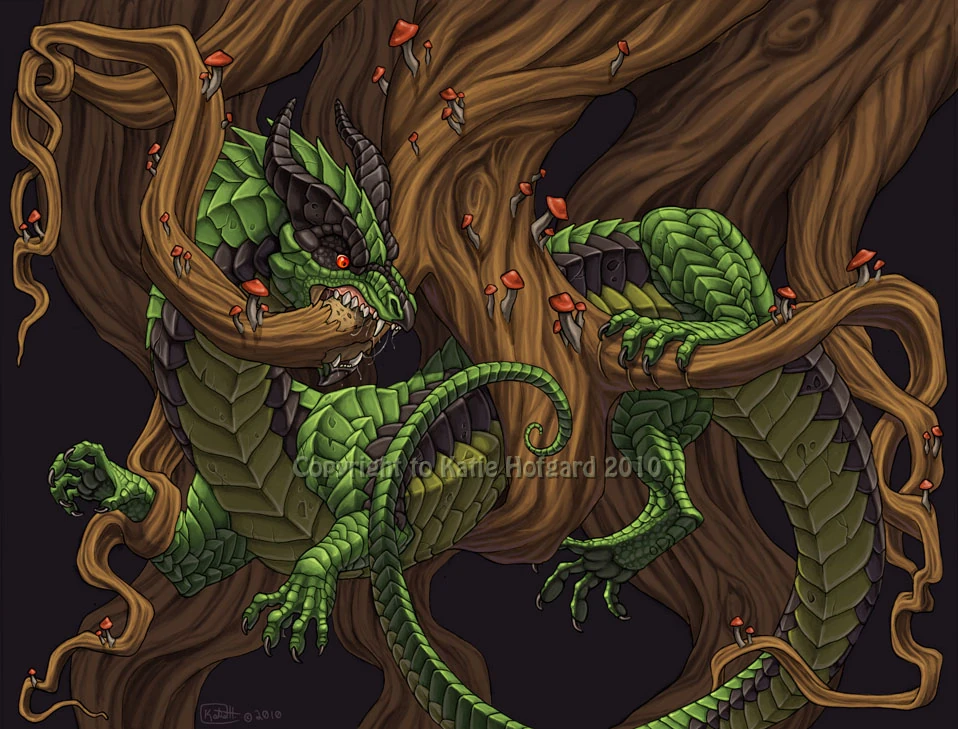
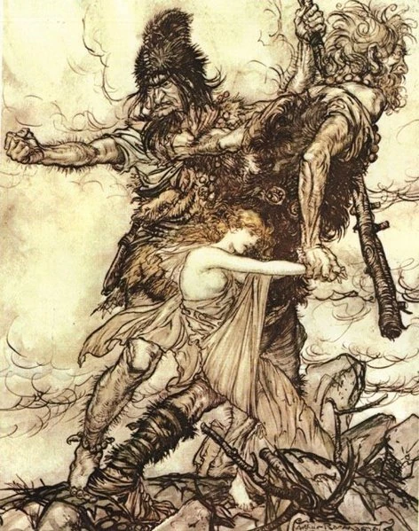

Mitologia Nórdica
Deuses, heróis e criaturas dos povos vikings
A Criação do Mundo
No princípio, existiam apenas dois reinos: Niflheim, o reino do gelo e da névoa, e Muspelheim, o reino do fogo. Entre eles havia o Ginnungagap, um grande vazio.
O Ginnungagap
Este abismo primordial era mais do que simplesmente um espaço vazio - representava o potencial bruto de criação. Quando o calor de Muspelheim encontrou o gelo de Niflheim no Ginnungagap, o derretimento formou as primeiras gotas de vida, que se tornaram o gigante Ymir.
Os Primeiros Seres
Da fusão do fogo e do gelo surgiram:
- Ymir - O primeiro ser, um gigante de gelo que gerou a raça dos gigantes (Jötnar) através de autogeração.
- Audhumla - A vaca primordial que alimentou Ymir com seu leite. Ela lambia blocos de gelo salgado, libertando Buri, o primeiro deus.
Buri teve um filho chamado Bor, que se uniu à gigante Bestla. Juntos, eles tiveram três filhos:
- Odin - O futuro rei dos deuses
- Vili - O deus da vontade
- Vé - O deus da consciência
A Formação dos Nove Reinos
Odin e seus irmãos mataram Ymir e usaram seu corpo para criar o mundo:
- Sua carne formou a terra (Midgard)
- Seu sangue tornou-se os mares
- Seus ossos transformaram-se em montanhas
- Seus dentes e fragmentos ósseos viraram rochas
- Seu crânio formou o céu, sustentado por quatro anões
- Seus cérebros foram lançados ao ar e tornaram-se nuvens
Os deuses então criaram os nove reinos da cosmologia nórdica:
Os Nove Reinos
- Asgard - Reino dos Aesir (deuses principais)
- Vanaheim - Reino dos Vanir (outro clã de deuses)
- Alfheim - Reino dos elfos da luz
- Midgard - Reino dos humanos (Terra)
- Jotunheim - Reino dos gigantes
- Svartalfheim - Reino dos elfos escuros/anoes
- Niflheim - Reino do gelo e da névoa
- Muspelheim - Reino do fogo
- Helheim - Reino dos mortos (diferente de Valhalla)
A Criação da Humanidade
Os deuses encontraram dois troncos de árvore na praia e deram-lhes vida:
- Ask (Freixo) - O primeiro homem
- Embla (Olmo) - A primeira mulher
Odin lhes deu o sopro da vida, Vili deu-lhes inteligência e emoção, e Vé deu-lhes sentidos e forma.
Deuses Principais
A mitologia nórdica possui dois clãs principais de deuses: os Aesir (deuses da guerra e soberania) e os Vanir (deuses da fertilidade e natureza). Após uma longa guerra, os dois clãs fizeram as pazes e trocaram reféns.
ODIN – O Pai de Todos
- Domínio: Sabedoria, guerra, poesia, magia
- Símbolos: Gungnir (lança), corvos Huginn e Muninn, lobos Geri e Freki
Odin é o deus supremo do panteão nórdico. Para obter sabedoria, ele sacrificou um olho na fonte de Mimir e ficou pendurado na Yggdrasil (a Árvore do Mundo) por nove dias e noites, ferido por sua própria lança, para aprender as runas. Ele reúne os melhores guerreiros mortos em Valhalla para a batalha final do Ragnarök.
THOR – O Protetor da Humanidade
- Domínio: Trovão, força, proteção, fertilidade
- Símbolos: Mjölnir (martelo), cinturão Megingjörð, luvas de ferro
Filho de Odin, Thor é o defensor de Asgard e Midgard contra os gigantes. Seu martelo mágico, Mjölnir, é uma das armas mais poderosas dos nove reinos. Thor viaja em uma carruagem puxada por dois bodes mágicos, Tanngrisnir e Tanngnjóstr.
LOKI – O Trapaceiro
- Domínio: Travessuras, mudança de forma, caos
- Símbolos: Serpente, fogo, formas variadas
Loki é uma figura complexa - nem totalmente deus nem gigante, mas ambos. Ele ajuda os deuses com sua inteligência, mas também causa muitos problemas. É pai de vários monstros, incluindo o lobo Fenrir, a serpente Jormungandr e Hel, a governante do reino dos mortos.
FREYR – O Deus da Fertilidade
- Domínio: Fertilidade, sol, chuva, colheitas
- Símbolos: Navio mágico Skidbladnir, javali Gullinbursti
Freyr é um dos Vanir que vive entre os Aesir. Ele governa a paz, o prazer e as colheitas. Seu culto era especialmente popular entre os fazendeiros. Freyr sacrificou sua espada mágica para conquistar a gigante Gerðr, o que o deixará vulnerável no Ragnarök.
FREYJA – A Deusa do Amor e da Guerra
- Domínio: Amor, beleza, fertilidade, guerra, magia
- Símbolos: Colar Brísingamen, capa de penas de falcão, gatos
Irmã gêmea de Freyr, Freyja é a mais importante das deusas nórdicas. Ela receve metade dos guerreiros mortos em batalha (a outra metade vai para Odin). Freyja ensinou a magia (seiðr) aos deuses e viaja em uma carruagem puxada por dois grandes gatos.
BALDR – O Deus da Luz
- Domínio: Luz, pureza, beleza, justiça
- Símbolos: Mistletoe (visco), navio Hringhorni
Filho de Odin e Frigg, Baldr era tão amado que sua mãe fez todos os seres do mundo jurar não machucá-lo. Apenas o visco, considerado inofensivo, foi esquecido. Loki descobriu isso e enganou o irmão cego de Baldr, Höðr, para matá-lo com uma flecha de visco, iniciando o prelúdio do Ragnarök.
TYR – O Deus da Guerra Justa
- Domínio: Guerra, justiça, lei, honra
- Símbolos: Espada, mão perdida
Tyr era o deus mais corajoso, conhecido por sacrificar sua mão para acorrentar o lobo Fenrir. Ele representa o aspecto mais nobre da guerra - a justiça e a honra, em contraste com a fúria de Odin ou a força bruta de Thor.
HEIMDALL – O Vigia dos Deuses
- Domínio: Vigilância, proteção, sentidos aguçados
- Símbolos: Gjallarhorn (chifre), cavalo Gulltoppr
Heimdall é o guardião da Bifröst (a ponte do arco-íris que liga Asgard a Midgard). Ele pode ouvir a grama crescer e ver a centenas de quilômetros de dia ou de noite. No Ragnarök, ele soará seu chifre para alertar os deuses.
FRIGG – A Rainha de Asgard
- Domínio: Casamento, maternidade, premonição
- Símbolos: Roda de fiar, cegonha
Esposa de Odin e mãe de Baldr, Frigg é a deusa da sabedoria doméstica. Ela conhece o destino de todos, mas nunca o revela. Seu tear é usado para tecer as nuvens, e ela protege as mulheres no parto.
NJORD – O Deus do Mar
- Domínio: Mar, vento, pesca, riqueza
- Símbolos: Navio, rede de pesca, moedas
Pai de Freyr e Freyja, Njord é um Vanir que vive em Asgard como parte do tratado de paz. Ele governa o vento e as águas, protegendo os navegadores. Seu culto era especialmente importante para os povos costeiros.
IDUN – A Guardiã das Maçãs da Juventude
- Domínio: Juventude, imortalidade, renovação
- Símbolos: Maçãs douradas, cesto
Idun guarda as maçãs mágicas que mantêm os deuses jovens. Quando Loki a sequestrou (levando ao envelhecimento dos deuses), eles quase entraram em pânico até que ela foi resgatada. Seu roubo é visto como um prenúncio do Ragnarök.
HEL – A Governante do Submundo
- Domínio: Morte, submundo, destino dos não guerreiros
- Símbolos: Metade do rosto vivo, metade cadavérico, cão Garm
Filha de Loki, Hel foi banida para governar o reino dos mortos que leva seu nome. Aqueles que não morrem em batalha vão para seu reino, que não é um lugar de tormento, mas sim de existência sombria.
Criaturas da Mitologia Nórdica
A mitologia nórdica é rica em seres fantásticos que habitam os nove reinos, desde aliados dos deuses até terríveis monstros que representam o caos primordial.
Fenrir – O Lobo Monstruoso
Filho de Loki, Fenrir é um lobo gigante tão poderoso que os deuses decidiram acorrentá-lo. Eles usaram três correntes mágicas, sendo a última feita de:
- O som do passo de um gato
- A barba de uma mulher
- As raízes de uma montanha
- O tendão de um urso
- O sopro de um peixe
- A saliva de um pássaro
No Ragnarök, Fenrir se libertará e devorará Odin, sendo então morto pelo filho de Odin, Vidar.
Jormungandr – A Serpente de Midgard
Outro filho de Loki, Jormungandr é uma serpente tão grande que circunda Midgard mordendo a própria cauda. Quando ela soltar a cauda, o Ragnarök começará.
- Thor uma vez tentou pescá-la usando a cabeção de um boi como isca
- No Ragnarök, Thor matará Jormungandr, mas morrerá de seu veneno
Os Anões (Dvergar)
Os anões são mestres artesãos que vivem em Svartalfheim. Eles criaram muitas das armas e tesouros dos deuses:
- Mjölnir - O martelo de Thor
- Gungnir - A lança de Odin
- Draupnir - Um anel que se multiplica
- Skidbladnir - O navio dobrável de Freyr
- Gleipnir - A corrente que prende Fenrir
Alguns anões famosos incluem Brokkr, Eitri, Andvari e Fjalar.
Os Elfos (Álfar)
Divididos em elfos da luz (Ljósálfar) e elfos escuros (Dökkálfar):
- Os elfos da luz vivem em Alfheim e são belos seres associados à luz e magia
- Os elfos escuros vivem no subsolo e são mais sombrios, muitas vezes confundidos com anões
- Ambos tipos podem ajudar ou prejudicar humanos
Os Valkírias
Donzelas guerreiras que servem Odin, escolhendo os guerreiros mais corajosos para morrer em batalha e serem levados para Valhalla.
- Montam cavalos alados e usam armaduras brilhantes
- Servem hidromel aos guerreiros em Valhalla
- Algumas valkírias famosas: Brynhildr, Sigrún, Hildr
Os Berserkers e Ulfhednar
Guerreiros humanos com habilidades sobrenaturais:
- Berserkers - Lutavam em frenesi, possivelmente vestindo peles de urso
- Ulfhednar - Equivalentes aos berserkers, mas usando peles de lobo
- Acreditava-se que eles canalizavam o espírito dos animais em batalha
Nidhogg – O Dragão que Rói as Raízes do Mundo
Este dragão maligno vive em Niflheim, roendo uma das raízes de Yggdrasil e os cadáveres no Nastrond (o salão dos assassinos e perjuros).
- Ele está em constante conflito com a águia no topo de Yggdrasil
- O esquilo Ratatosk corre entre eles levando mensagens de insultos
- No Ragnarök, Nidhogg voará sobre o campo de batalha, carregando cadáveres em suas asas
Os Gigantes (Jötnar)
Os gigantes são seres primordiais que representam as forças caóticas da natureza:
- Nem todos são hostis - alguns se casam com deuses
- Incluem gigantes do gelo (hrímþursar) e gigantes do fogo (eldjötnar)
- No Ragnarök, liderados por Loki, eles atacarão Asgard
- Alguns gigantes famosos: Ymir (o primeiro), Thrym (roubou o martelo de Thor), Skadi (deusa do inverno)
Outras Criaturas Notáveis
- Ratatosk - O esquilo que corre pela Yggdrasil espalhando fofocas
- Huginn e Muninn - Os corvos de Odin que trazem notícias do mundo
- Tanngrisnir e Tanngnjóstr - Os bodes de Thor que puxam sua carruagem
- Gullinbursti - O javali dourado de Freyr
- Sleipnir - O cavalo de oito patas de Odin, filho de Loki
- Fafnir - O dragão guardião de tesouros (originalmente um anão)
Ragnarök – O Crepúsculo dos Deuses
O Ragnarök é o apocalipse da mitologia nórdica, uma série de eventos catastróficos que levarão à morte da maioria dos deuses e à destruição do mundo, seguida por seu renascimento.
Os Sinais do Ragnarök
Antes do Ragnarök, ocorrerão três invernos consecutivos sem verão (Fimbulwinter), marcados por:
- Guerras fratricidas entre humanos
- Fome e sofrimento generalizados
- O sol e a lua sendo perseguidos e devorados pelos lobos Sköll e Hati
- Terremotos que libertarão Loki e Fenrir
A Grande Batalha
Quando começar, os eventos se desenrolarão assim:
- Heimdall soará o Gjallarhorn para alertar os deuses
- Os exércitos de Hel marcharão de Navio dos Mortos (Naglfar)
- Loki liderará os gigantes e monstros contra Asgard
- Os deuses e seus aliados se reunirão no campo de Vígríðr
As principais mortes incluirão:
- Odin será devorado por Fenrir, que será então morto por Vidar
- Thor matará Jormungandr, mas morrerá de seu veneno
- Loki e Heimdall se matarão mutuamente
- Tyr e o cão Garm se matarão
- Freyr morrerá lutando contra Surtr, o gigante de fogo
O Renascimento
Após a destruição, o mundo renascerá:
- Alguns deuses sobreviverão, incluindo os filhos de Odin e Thor
- Dois humanos, Lif e Lifthrasir, terão se escondido na árvore Yggdrasil e repovoarão o mundo
- A terra emergirá do mar, fértil e verde
- O sol terá uma filha que tomará seu lugar
Este novo mundo será governado em paz por Baldr, retornado do reino dos mortos.
Fatos Curiosos
A mitologia nórdica influenciou profundamente a cultura escandinava e continua relevante até hoje. Aqui estão alguns aspectos fascinantes:
Os Nórdicos Não Temiam a Morte
Para os vikings, morrer com honra em batalha era o destino mais glorioso, garantindo um lugar em Valhalla. Isso explica sua reputação como guerreiros destemidos.
- Os funerais de guerreiros importantes incluíam barcos queimados com seus pertences
- Acreditava-se que os mortos precisariam de suas armas no além
A Influência nos Dias da Semana
Quatro dias da semana em inglês vêm de deuses nórdicos:
- Tuesday (Terça) - Dia de Tyr (Tiwaz)
- Wednesday (Quarta) - Dia de Odin (Woden)
- Thursday (Quinta) - Dia de Thor
- Friday (Sexta) - Dia de Frigg ou Freyja
As Runas – Mais que um Alfabeto
O alfabeto rúnico (Futhark) tinha significado mágico e religioso:
- Odin descobriu as runas após se sacrificar na Yggdrasil
- Cada runa tinha um nome e significado simbólico
- Eram usadas para adivinhação, proteção e magia
O Conceito de Wyrd (Destino)
Os nórdicos acreditavam que o destino (Wyrd) era tecido pelas Nornas (equivalentes às Moiras gregas):
- Urd (Passado)
- Verdandi (Presente)
- Skuld (Futuro)
Elas regavam as raízes da Yggdrasil com água do Poço de Urd, mantendo o mundo em equilíbrio.
Os Nórdicos Não Tinham Templos
Ao contrário de outras religiões antigas, os nórdicos geralmente adoravam ao ar livre:
- Locais naturais como bosques, lagos e montanhas eram sagrados
- Sacrifícios (blót) eram feitos em altares temporários
- Os poucos templos que existiam eram simples estruturas de madeira
A Influência no Cristianismo Nórdico
Quando a Escandinávia se cristianizou, muitos elementos pagãos foram incorporados:
- O Natal absorveu tradições do Yule (festival do solstício de inverno)
- Alguns santos cristãos assumiram atributos de deuses nórdicos
- Muitas igrejas foram construídas em locais sagrados pagãos
A Literatura Épica
Nossos principais conhecimentos sobre a mitologia nórdica vêm de:
- Edda Poética - Coleção de poemas do século XIII
- Edda em Prosa - Escrita por Snorri Sturluson no século XIII
- Sagas islandesas - Histórias que misturam mito e história
Estes textos foram escritos após a cristianização, então podem refletir influências cristãs.
Os Nove Mundos e a Cosmologia
A visão nórdica do universo era complexa:
- Yggdrasil, a Árvore do Mundo, conecta todos os reinos
- Asgard está no topo, Midgard no meio, e os reinos dos mortos abaixo
- A ponte Bifröst (arco-íris) liga Asgard a Midgard
- Um dragão (Nidhogg) rói as raízes, enquanto uma águia observa do topo
O Legado na Cultura Popular
A mitologia nórdica influencia muito a cultura moderna:
- Personagens da Marvel como Thor e Loki
- Obras de J.R.R. Tolkien (anões, elfos, o Um Anel)
- Séries como Vikings e The Last Kingdom
- Jogos como God of War e Assassin's Creed Valhalla
Os Principais Deuses Nórdicos
| Nome | Função Principal | Clã |
|---|---|---|
| Odin | Rei dos deuses, sabedoria, guerra, poesia | Aesir |
| Thor | Trovão, proteção, força | Aesir |
| Loki | Travessuras, mudança de forma, caos | Jötunn (vive com Aesir) |
| Freyja | Amor, beleza, fertilidade, guerra | Vanir |
| Freyr | Fertilidade, paz, prosperidade | Vanir |
| Frigg | Casamento, maternidade, premonição | Aesir |
| Tyr | Guerra justa, honra, lei | Aesir |
| Baldr | Luz, pureza, beleza | Aesir |
| Heimdall | Vigilância, proteção, sentidos aguçados | Aesir |
| Njord | Mar, vento, pesca, riqueza | Vanir |
| Idun | Juventude, imortalidade, maçãs da juventude | Aesir |
| Hel | Reino dos mortos (Helheim) | Jötunn (filha de Loki) |
Os Nove Reinos da Cosmologia Nórdica
| Reino | Descrição | Habitantes Principais |
|---|---|---|
| Asgard | Reino dos Aesir, localizado no alto da Yggdrasil | Odin, Thor, Frigg e outros deuses Aesir |
| Vanaheim | Reino dos Vanir, deuses da natureza e fertilidade | Freyr, Freyja, Njord |
| Alfheim | Reino dos elfos da luz | Elfos luminosos |
| Midgard | Mundo dos humanos (Terra) | Humanos |
| Jotunheim | Reino dos gigantes (Jötnar) | Gigantes do gelo e da montanha |
| Svartalfheim | Reino dos anões/elfos escuros | Anões, elfos escuros |
| Niflheim | Reino do gelo primordial, névoa e frio | Dragão Nidhogg, mortos sem honra |
| Muspelheim | Reino do fogo primordial | Gigantes de fogo, liderados por Surtr |
| Helheim | Reino dos mortos que não morreram em batalha | Hel, Garm, almas dos mortos |
Eventos do Ragnarök
| Evento | Descrição | Consequência |
|---|---|---|
| Fimbulwinter | Três invernos consecutivos sem verão | Caos e sofrimento em Midgard |
| Libertação de Loki | Terremotos quebram os grilhões de Loki | Loki lidera os exércitos do caos |
| Libertação de Fenrir | O lobo Fenrir quebra suas correntes | Devora Odin durante a batalha |
| Jormungandr emerge | A serpente de Midgard sai do mar | Envenena Thor após ser morta por ele |
| Surtr queima o mundo | O gigante de fogo incendeia os nove reinos | Destruição total seguida de renascimento |
| Batalha Final | Deuses vs. gigantes e monstros em Vígríðr | Morte da maioria dos deuses e seres |
| Renascimento | O mundo emerge renovado do mar | Baldr retorna para governar o novo mundo |
Criaturas Importantes
| Criatura | Tipo | Significado |
|---|---|---|
| Fenrir | Lobo gigante | Destruição, caos, devorador de Odin |
| Jormungandr | Serpente de Midgard | Circunda o mundo, inimiga de Thor |
| Nidhogg | Dragão | Rói as raízes de Yggdrasil |
| Valkírias | Donzelas guerreiras | Escolhem os mortos para Valhalla |
| Anões | Mestres artesãos | Criam armas e tesouros mágicos |
| Elfos | Seres mágicos | Luminosos (bons) ou escuros (ambíguos) |
| Gigantes | Forças primordiais | Representam o caos e forças naturais |